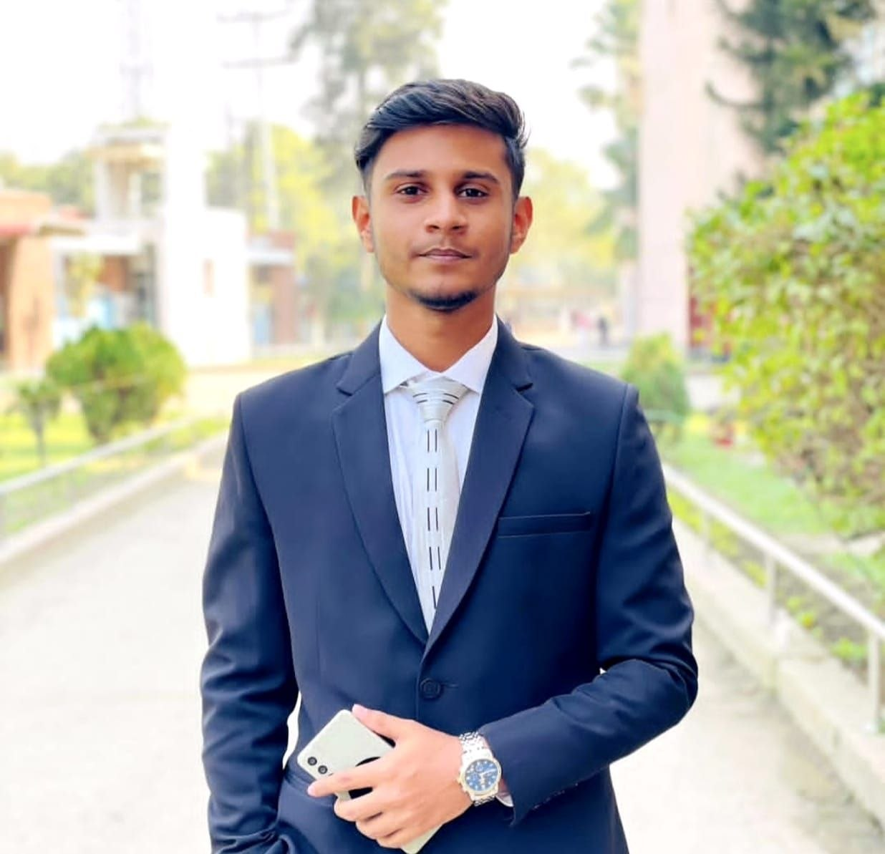

Hello! I'm Fahim Kabir Tajim, a dedicated BBA student currently pursuing my Bachelor of Business Administration (BBA) at World University of Bangladesh.
Besides my academic journey, I have a deep passion for gaming, especially PUBG. Gaming has taught me valuable skills such as strategic thinking, teamwork, patience, quick decision-making, and leadership under pressure.
I also enjoy playing and watching Cricket and Football. These sports keep me motivated, physically active, and help me develop discipline, teamwork, and a competitive mindset.
My biggest dream is to become a Professional PUBG Esports Player and proudly represent Bangladesh in international tournaments. I believe that with dedication, continuous practice, and hard work, every dream can become a reality.